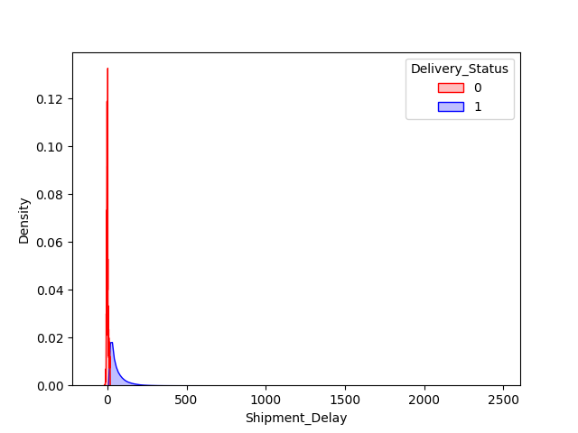
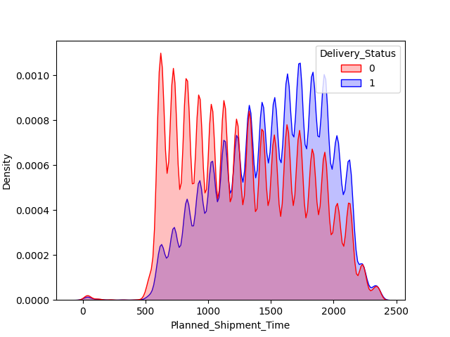

1st Moment
|
2nd Moment
|
3rd Moment
|
Outliers
|
Histograms
|
QQ Plots
|
Scatter plots and heatmaps
|
Scaled QQ Plots
|
Conclusion
4th Moment Business Decision
1 / 7
Kurtosis:
-0.217094
Density of Number of Carriers
2 / 7
Kurtosis:
2.735711
Density of Planned time of Travel
3 / 7
Kurtosis:
3.273434
Density of Distance
4 / 7

Kurtosis:
96.077752
Density of Shipment Delay
5 / 7

Kurtosis:
-1.045884
Density of Planned time of Shipment
Packages with small distances are tend to get lost.
6 / 7
Kurtosis:
-0.985367
Density of Actual time of Shipment
7 / 7
Kurtosis:
-0.602298
Density of Planned time of Delivery
❮
❯